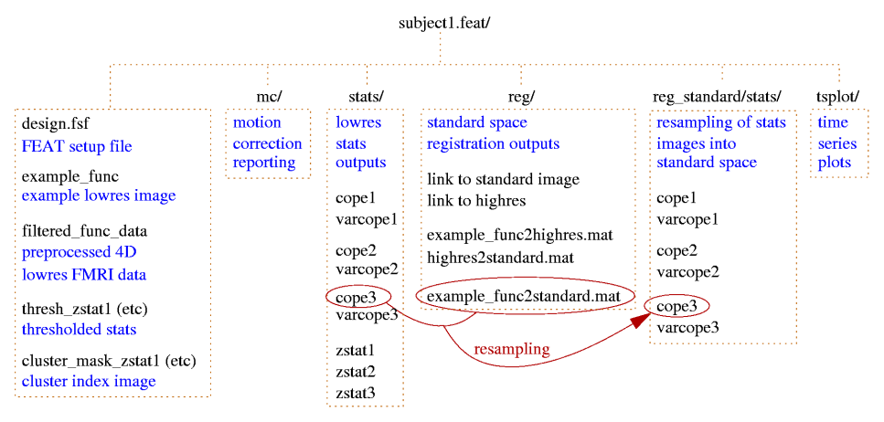
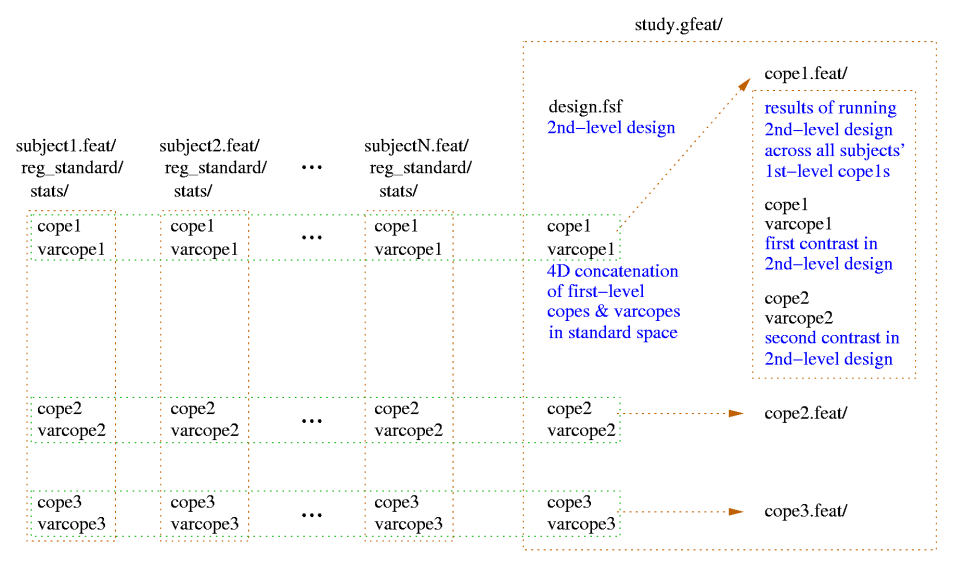

FEAT Output
FEAT finds the directory name and filename associated with the 4D
input data. If the associated directory is writable by you then a
related whatever.feat directory is created into which all FEAT output
is saved. If not, the FEAT directory is created in your home
directory. In either case, if the appropriately named FEAT directory
already exists, a "+" is added before the .feat suffix to give a new
FEAT directory name. (Of course, all the above gets ignored if you
explicitly set the output directory name.)
If you rerun Post-stats or Registration, you can
choose (under the Misc tab) whether to overwrite the relevant
files in the chosen FEAT directory or whether to make a complete copy
of the FEAT directory and write out new results in there.
All results get saved in the FEAT directory.

- cluster_mask_zstat1 image of clusters found for
contrast 1; the values in the clusters are the index numbers as used
in the cluster list.
- cluster_zstat1.html / .txt the list of significant clusters
for contrast 1. Note that the co-ordinates are the original voxel
co-ordinates. (MEDx users: MEDx inverts y, so to use the y values in
MEDx, use y_medx = y_size - 1 - y_feat where y_size is the size of the
image in the y direction.)
- cluster_zstat1_std.html / .txt the same, but with
co-ordinates given in standard space. This exists if registration to
standard space has been carried out.
- design.con list of contrasts requested.
- design.fsf FEAT setup file, describing everything about the
FEAT setup. This can be loaded into the FEAT GUI.
- design.fts list of F-tests requested.
- design.gif 2D image of the design matrix.
- design.mat the actual values in the design matrix.
- design.trg event onset times, created to be used in
peri-stimulus timing plots.
- design_cov.gif 2D image of the covariance matrix of the design matrix.
- example_func the example functional image used for
colour rendering, and also the one that was used as the target in
motion correction. This is saved before any processing is carried
out. This is also the image that is used in registration to structural
and/or standard images.
- filtered_func_data the 4D FMRI data after all filtering has
been carried out. (prefiltered_func_data is the output from motion
correction and the input to filtering, and will not normally be saved
in the FEAT directory.) Although filtered_func_data will normally have
been temporally high-pass filtered, it is not zero mean; the mean
value for each voxel's timecourse has been added back in for various
practical reasons. When FILM begins the linear modelling, it starts by
removing this mean.
- lmax_zstat1.txt and _std.txt are lists of local
maxima within clusters found when thresholding.
- mask the binary brain mask used at various stages in
the analysis.
- rendered_thresh_zstat1.png 2D colour rendered stats overlay
picture for contrast 1.
- rendered_thresh_zstat1 3D colour rendered stats overlay
image for contrast 1. After reloading this image, use the
Statistics Colour Rendering GUI to reload the colour
look-up-table.
- report.log a log of all the programs that the feat script
ran (ie the same as report.log but without the log outputs).
- report.html the web page FEAT report (see below).
- report.log a log of the FEAT run, including all calls to
FSL programs and their log outputs.
- thresh_zstat1 the thresholded Z statistic image for
contrast 1.
- mc/prefiltered_func_data_mcf.par a text file containing the
rotation and translation motion parameters estimated by MCFLIRT, with
one rwo per volume.
- mc/mc_rot.gif, mc/mc_trans.gif plots showing these
parameters as a function of volume number (i.e., time).
- reg/example_func2highres.* files are related to the
registration of the low res FMRI data to the high res image. The .mat
file is the transformation in raw text format. The .gif image includes
several slices showing overlays of the two images combined after
registration. (Note that the inverse of each transform file is also
saved (e.g. highres2example_func.mat) to make it easy for you later to
take the highres image back into the lowres space.)
- reg/example_func2standard.* files are related to the
registration of the low res FMRI data to the standard image.
- reg/highres is a symbolic link to the high res image.
- reg/highres2standard.* files are related to the
registration of the high res image to the standard image.
- reg/standard is a symbolic link to the standard image.
- stats/contrastlogfile a logfile showing how well the
statistics fit a Gaussian distribution, on the assumption of no
activation.
- stats/cope1 the contrast of parameter estimates image
for contrast 1.
- stats/corrections a list of statistical corrections used
within FILM modelling.
- stats/dof the mean estimated degrees-of-freedom over the
whole data set.
- stats/neff1 a statistical correction image for contrast
1.
- stats/glslogfile a FILM run logfile.
- stats/pe1 the parameter estimate image for EV 1.
- stats/probs a list of probabilities used for estimating
Gaussian statistical fitting.
- stats/ratios a list of estimates for Gaussian statistical
fitting.
- stats/sigmasquareds the 3D image summarising the
residuals (errors) in the linear model fitting.
- stats/smoothness the estimation of the smoothness of the 4D
residuals field, used in inference.
- stats/stats.txt another FILM logfile.
- stats/threshac1 The FILM autocorrelation parameters.
- stats/tstat1 the T statistic image for contrast 1
(=cope/sqrt(varcope)).
- stats/varcope1 the variance (error) image for contrast 1.
- stats/zstat1 the Z statistic image for contrast 1
- tsplot/tsplot_zstat1.gif the full model vs data plot for the
maximum Z statistic voxel from contrast 1.
- tsplot/tsplot_zstat1p.gif the plot of reduced data vs cope
partial model fit - i.e. data-full_model+partial_model vs
partial_model.
- tsplot/tsplot_zstat1.txt text file of values used for the
above plots, for the maximum Z statistic voxel from contrast 1. The
first column is the data, the second column is the partial model fit
for contrast 1, the third column is the full model fit and the fourth
column is the reduced data for contrast 1.
- tsplot/tsplotc_zstat1.* plots and text file as above, but
instead of using the peak Z stat voxel, here the data is averaged over
all voxels in all significant clusters for contrast 1.
- ps_tsplot_zstat1_ev1.gif (etc); peristimulus text files
and plots, showing model fits averaged over multiple stimulus repeats
and "data scatter" over these repeats. The format for the text files
is the same as above, except for the insertion of an extra first
column which encodes the peristimulus timing (i.e., time relative to
the start time within the peristimulus window). The _ev1 part
of the filename means that this file/plot relates to EV1; separate
plots and text files are generated for each EV for every contrast.
If you have run F-tests as well as T-tests then there will also
be many other files produced by FEAT, with filenames similar to those
above, but with zfstat appearing in the filename.
The web page report includes the motion correction plots, the 2D
colour rendered stats overlay picture for each contrast, the data vs
model plots, registration overlay results and a description of the
analysis carried out.
Higher-Level FEAT Output
A second-level .gfeat directory contains one 4D cope* for each of
the first-level contrasts; these are simply the concatenation (across
the first-level analyses) of those first-level cope images (in
standard space) - ie the 4th dimension here is the number of
first-level analyses. This is the input to the second-level analysis.
After the second-level analysis has completed each of those 4D
cope* files in the .gfeat directory will have resulted in a .feat
second-level output, containing all analysis steps (and of course,
second-level output copes).
